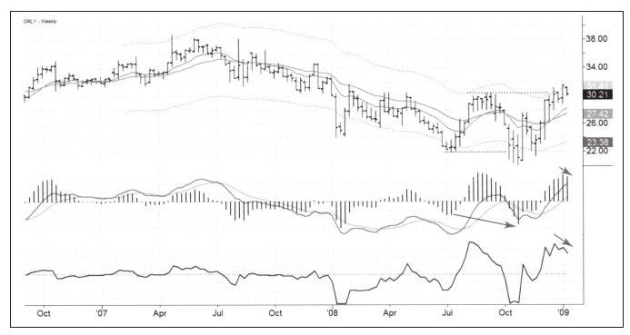
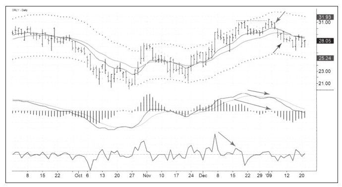

交易者不需要在熊市中以很高的价位做空获利，一些做空机会出现在漫长的下跌过程中。这些下跌的股票让我想起那些溺水的人，他们浮出水面来吸一口气，而后又沉入水中。
下面这则案例来自我的交易日记，奥莱利汽车公司（ORLY）和其他股票一样在2008年10月创出新低，其周线图MACD柱也跌到新低，反映出下跌力量强劲并且闪出一丝重要信息，那就是市场可能会再次测试10月份形成的底部，也有可能创出新低。
2008年10月筑底期间，ORLY反弹到了夏季时达到的高点。这次反弹表面上看起来非常不错，但并没有让10月份的顶背离失效，这个信号出现表明机会就在眼前。
在图9-17的右侧，上涨过程中不断出现顶背离，其含义是ORLY正在筑顶并即将下跌。首先，突破前高后价格拒绝上涨，基本上停留在压力位附近，周线强力指标开始恶化，周线MACD柱开始下跌，同时周线组合系统由绿变蓝，这样的情形可以做空。

日线图（见图9-18）表现出一组完美的信号：向上假突破以及三组顶背离——MACD柱背离、MACD线背离以及强力指标背离。1月6日周二我以30.35美元做空ORLY。

我在周五也就是1月9日平回空头头寸，平仓价是28.39美元。日线组合系统是红色的，让我可以继续持有，但由于这次交易是Spike集团给出的建议，所以我想遵从它的建议；另外，我也不喜欢持股过周末；最后，我喜欢的交易方式是波段交易，也就是交易周期比中长线投资要短、比日内交易要长的交易。我很享受抓住一次很好的波段，然后在周末来临前结束交易，并在周末寻找新的交易机会。
寻找一种方法以适应自己的脾性是件非常重要的事，我的目标对有些人来说可能太短，对另一些人来说可能太长，但对我来说正合适。为自己选择合适的时间框架并坚持在这个时间框架内做交易是件很重要的事。